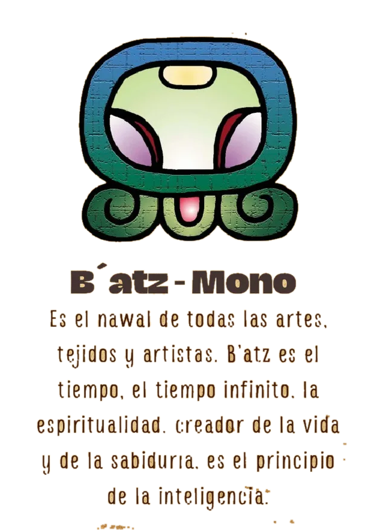

WayakBatz
WayakBatz
WayakBatz
WayakBatz
Dos palabras mayas unidas para crear: El tejedor de sueños a través del tiempo.
El origen del concepto: un nombre que representa lo que hacemos, como identidad cultural y compromiso de herencia. Los mayas fueron auténticos creadores de ciencia, arte y escritura: desarrollaron un complejo sistema de escritura glífica, conocimientos avanzados de astronomía y matemáticas, el uso del cero y calendarios precisos como la Cuenta Larga.
Sueño, revelación. La idea que se sueña antes de hacerse.
El hilo del tiempo: Simboliza la continuidad de la vida, la conexión entre el pasado, el presente y el futuro, el destino y la unidad familiar.

El símbolo del logo es el glifo B'atz': girado 180° forma la W de Wayak. El sueño y el hilo, en un solo trazo.
Batzy es el mono aullador, tejedor del tiempo. Programador de WayakBatz.
El mono y la creación: Se asocia con la creatividad, el arte, la inteligencia, la sabiduría y la habilidad manual o el tejido. En el calendario maya se vincula con el inicio de ciclos y procesos.